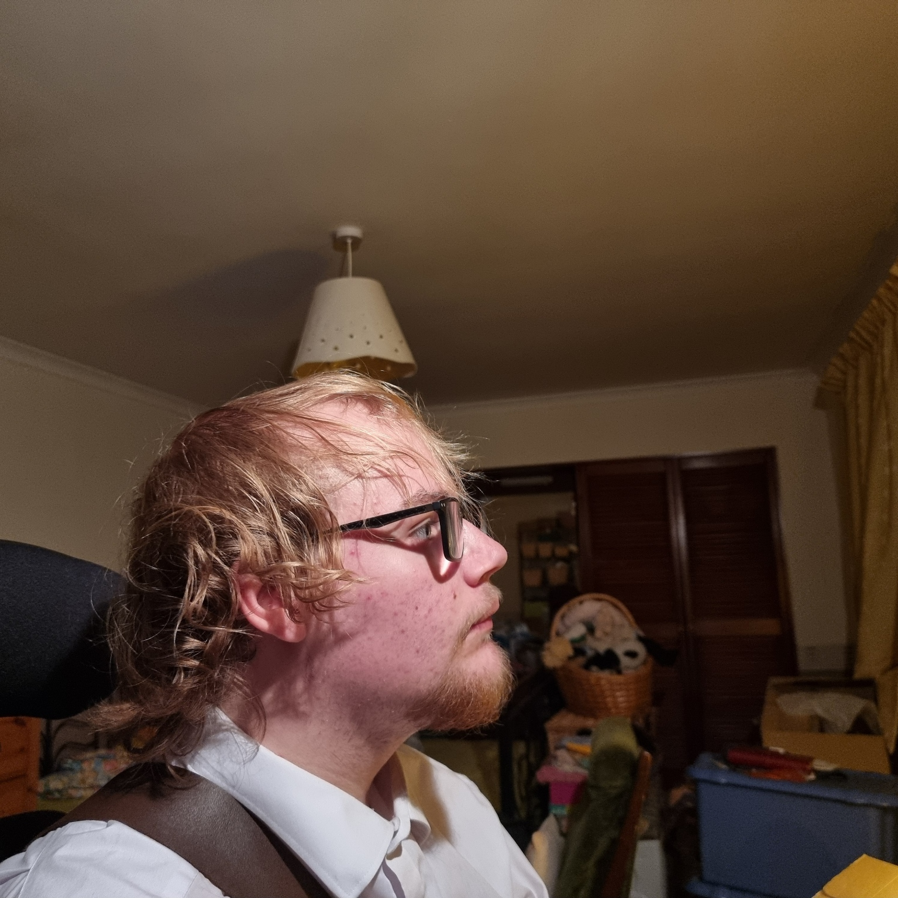

About CJ Philip

Hello, I am CJ Philip.
I was born and raised in Scotland and I live with ADHD, dyslexia, and dyspraxia. Throughout my life I have faced many trials, but I have always had a passion for creativity.
Through CJ Philip Productions, I am dedicated to sharing my stories, creative vision and personal beliefswith the world.
About CJ Philip Productions
What CJ Philip Productions Does
At CJ Philip Productions, we are dedicated to authentic human-made work. That means none of our products are created with the use of generative AI.
We believe in the power of human creativity and craftsmanship. Currently, our team consists of myself, CJ Philip, but we are always looking for talented individuals to help bring our projects to life.
What Is CJ Philip Productions?
CJ Philip Productions is not a company; it is simply the name I have assigned to my creative endeavors and the team behind them.
This means that while my name is associated with the brand, I may not be the only person involved in the creative development.
CJ Philip Productions is, however, an important part of my creative process. It is where my ideas take shape and come to life.